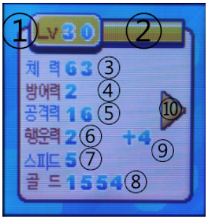
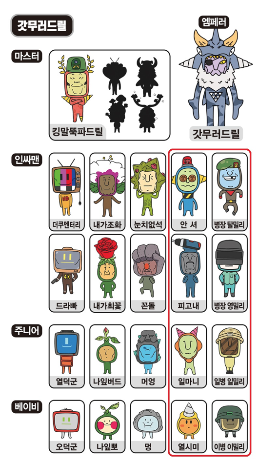
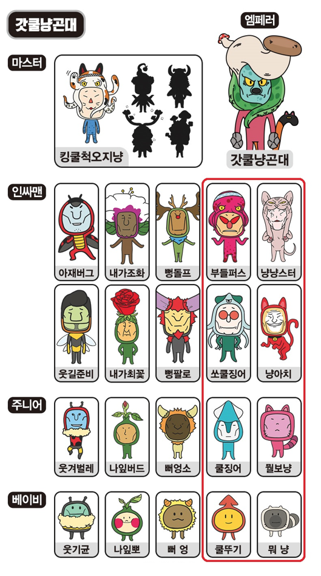
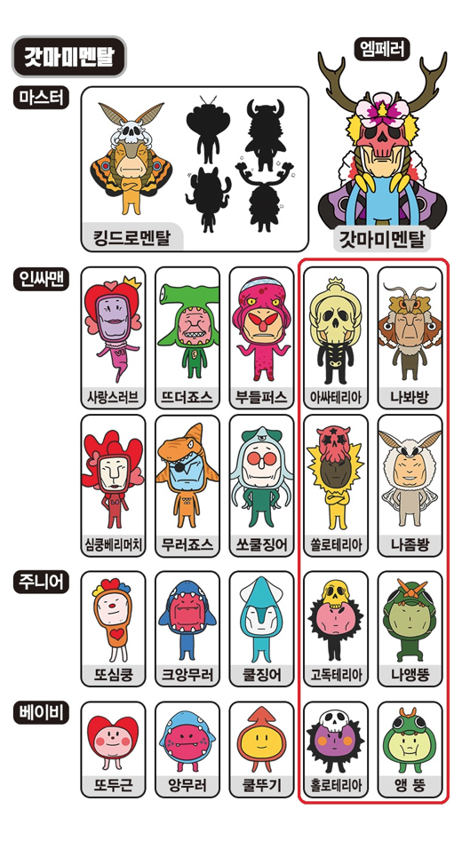
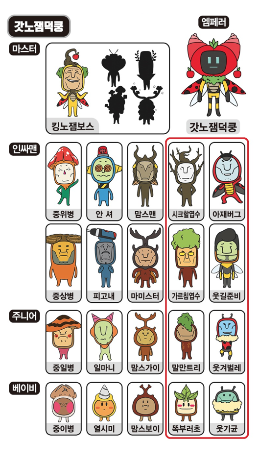

this guide is a work-in-progress! | ver.01 last edit: mar 10, 2023
Information highlighted in gray is true to my current progress. I don't know if it could be different on another playthrough.
Information highlighted in yellow is unconfirmed, speculation or needs more testing.
jump to...
gameplay summary
The Inssa Man toy is a handheld character battling game. You raise and battle bizarre and quirky characters from the Inssa Man animated YouTube series. Your ultimate goal is to evolve your character from an adult to it's "King" and "God" forms.
Battles are effortless and the device does not have a care system. You do not need to feed, play or maintain your character's health and the character does not go to sleep. Your only tasks are to battle and expand your encyclopedia. To achieve evolution you must level your character, connect with other devices, collect and upgrade items and rebirth into multiple generations.
The gameplay loop is simple. You begin by waiting for your seed to grow into a baby. You can play mini games and feed your youngling to expedite it's growth into the next stage. Finally, when the character becomes an adult you can participate in battles. You will continue to battle until your character is max level. Once it's reached max level you unlock the ability to reincarnate. This will give you a new seed and you will repeat the process. You continue this loop for multiple generations until you meet the requirements for evolution.
▲ back to the top
basic overview
interface
A (left) : Cancel
B (middle) : Confirm
C (right) : Move SelectionThe screen will go to sleep after 40 seconds of inactivity.
A notification will pop up if your battery is low. You need to insert new batteries to continue playing, but your data is saved. Your progress will resume when the batteries are replaced
low battery alert
growth stages
There are 5 different babies per device type (shell color) and each baby can grow up to be one of two adults. In other words, you can grow a total of 10 different adults per device. The adult your baby grows into is random.
① Seed + 5 mins → ② Baby + 30 mins → ③ Junior + 2 hours →
④ Innsa Man (Adult) + Evolution → ⑤ King (Master) + Evolution → ⑥ God (Emperor)
gameplay tips
▲ back to the top
Everything below is speculation based off my interpretation of the OCR translated manual.
menus and mechanics explained
🧰 item box
1. Item Box
▲ back to the top
🏪 item shop
2. Item Shop
▲ back to the top
🎮 mini games
3. Mini Games
▲ back to the top
🥊 battles
4. Battles
▲ back to the top
📋 encyclopedia
5. Encyclopedia
Use C to scroll through the list and B to view the character's previous lv. 30 stats.
▲ back to the top
⚙ settings
6. Settings
▲ back to the top
💱 reincarnation and evolution
7. Reincarnation and Evolution
You need to meet the requirements for reincarnation or evolution before you're able to use these options.
▲ back to the top
I personally have not evolved a character from an adult to a King yet, so i can not confirm if the below information is correct.
I have not initiated PVP Battles yet because I don't want to skew any evolution/reincarnation data I've been collecting.
Reincarnation
You can raise characters from other rosters by participating in PVP (communication) Battles.
The manual says you could get 1-2 adults per device type for a total of 10 adults.
In other words, if you battle with the other shells you could reincarnate as characters from those devices.
At this time I don't know which characters are applicable or how many times you need to battle, but the manual implies "a lot".
Evolution
I do not know how to evolve. I can only speculate based off the user manual.
The requirements to evolve may include some or all of the following criteria:
From Adult to King (Master) | Method 1
1. You must have all 10 device specific adults recorded in your Encyclopedia.
2. Your current character must be lv 30.
3. Your current character must be a part of your device's character roster.
Then you should be able to use the evolution option.
OR
From Adult to King (Master) | Method 2
1. Raise one of the adults circled in red
2. Have a certain number of evolution stones (I don't know how many). The more materials you have the higher the chance evolution will succeed.
Then you should be able to use the evolution option, however there is a chance evolution could fail. If it fails you will get a new seed instead.
From King to God (Emperor)
1. Record all 10 device specific adults to your Encyclopedia.
2. Record all 5 kings to your Encyclopedia. In order to get all 5 you will need to use PVP (Communication) battles.
3. Have 30 of each evolution material. The more materials you have the higher the chance evolution will succeed.
▲ back to the top
💻 character info
8. Character Info (Baby/Junior)
If your character is a Baby or a Junior this is the screen you'll see when selecting the Character Info menu.
8. Character Info (Adult)
Once your Junior has evolved into the adult stage you are presented with the following options.
▲ back to the top

(character stats)
① Level: Max level is 30.
② Experience: Any experience earned after lv. 30 is discarded.
③ Health: How much HP your Inssa Man has.
⑤ Attack: I believe this effects how much damage your hits deal.
⑥ Luck: The user manual says this effects your evasion/dodge rate.
⑧ How much gold you're carrying.
⑨ Bonus stats from the equipped item.
I haven't noticed a pattern with stat changes on level up. The amount of points you are awarded upon level up seem completely random.
(additional stats)
The user manual hints that special buffs will show up here as you progress through the game.
I'm unsure if the buffs listed in this image will be the same for every playthrough.
① Food Discount: Food items in the shop will now be sold at half their original price.
② nothing yet
③ Increased Experience: Battles will now reward more experience points.
▲ back to the top
(battle record)
Ⓐ Battles against CPUs
Ⓑ Battles against other devices
① Win Rate
② Win Streak
▲ back to the top
item list
Shield
Increases Defense
Cookie
Increases Luck
Coin
Increases gold rewards from battles.
When bought from the shop the modifier is +8%.
Boots
Increases Speed
Sword
Increases Attack
Reincarnation Stone
Required to rebirth your lv. 30 character.
evo_item_01
evo_item_02
evo_item_03
evo_item_04
evo_item_05
evo_item_06
evo_item_07
evo_item_08
Lollipop
Chicken
Juice
Burger
Pizza
Rice
Steak
Surprise Box
Randomly gives you 1 food, 1 evolution material or 1 piece of equipment.
▲ back to the top
characters and device roster
A) GOD MURER DRILL: Grey Shell + White Faceplate
B) GOD COOL NYANG KKDONDAE: Green Shell + Red Faceplate
C) GOD MOMMY MENTAL: Purple Shell + Blue Faceplate
D) GOD NOJAM DEOKKUNG: Red Shell + Yellow Faceplate
The growth tree is linear.
Your baby (bottom of the tree) can only grow up to be one of two adults (third and fourth characters above the baby). A) GOD MURER DRILL: Grey Shell + White Faceplate

B) GOD COOL NYANG KKDONDAE: Green Shell + Red Faceplate

C) GOD MOMMY MENTAL: Purple Shell + Blue Faceplate

D) GOD NOJAM DEOKKUNG: Red Shell + Yellow Faceplate

▲ back to the top
physical properties
▲ back to the top
these are questions i'd like answered, things i'm currently collecting data on, things i want to do and so on...work in progress
▲ back to the top